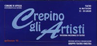

|  |
9° RASSEGNA NAZIONALE TEATRO
APRILIA 23-30 LUGLIO 1994
TEATRO EX MATTATOIO
PROGRAMMA
23 LUGLIO ore 21,30
Patrizia Cerroni & i Danzatori Scalzi
FOLLI D’AMORI. Coreografie e regia di Patrizia Cerroni
ore 23,15 CAFFÈ CONCERTO
24 LUGLIO ore 21,30
Donati & Olesen
KAMIKAZE. Cabrate – Teatro
ore 23,15 CAFFÈ CONCERTO
26 LUGLIO ore 21,30
Latina Teatro
CAVE CARNEM
ore 23,15 CAFFÈ CONCERTO
27 LUGLIO ore 21,30
Riccardo Cassini
NUTELLA NUTELLAE
ore 23,15 CAFFÈ CONCERTO
29 LUGLIO ore 21,30
Spinacelo Cultura
BARBARI (Abide with Me) di Barry Keeffe. Regia di Salvatore Chiosi
ore 23,15 CAFFÈ CONCERTO
30 LUGLIO ore 21
BANDE E PREDATORI in concerto. In collaborazione con il Camarillo Brillo.
ESPOSIZIONI:
Sala A: MOSTRA ALLIEVI SCUOLA D’ARTE MEDITERRANEA
Sala B: MOSTRA DI PASSEPARTOUT E MADONNA. Navigando nei mari della cultura…e sorridendo.